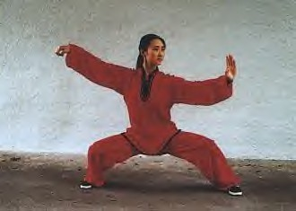
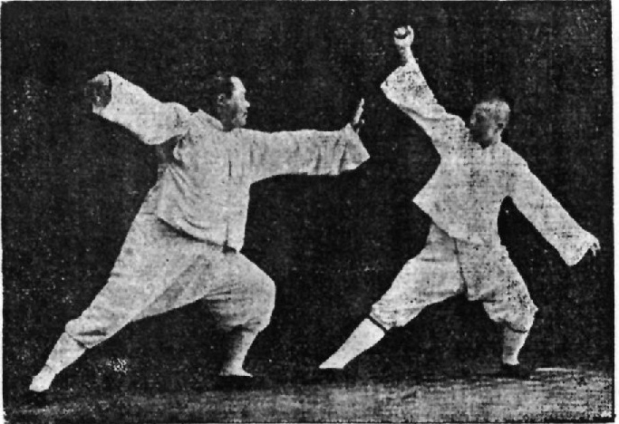

Back to Home
Tai Chi
太极
What is it?
- Internal Chinese martial art practiced for both defensive training and health benefits; spreaded worldwidely
- Originally conceived as a martial art, it is also typically practiced for other reasons:
- Competitive wrestling / pushing hands (推手)
- Demonstration competitions
- achieving greater longevity
- As a result, a multitude of training forms exist, both traditional and modern, which correspond to those aims with differing emphasis
- Some training forms of t'ai chi ch'uan are especially known for being practiced with relatively slow movements.
Styles:
Chen Style

- Parent form of other styles (Yang, Sun, Wu, Woo) (杨, 孙, 吴, 武)
Yang Style

- Originator, Yang Lu-ch'an (杨露禅) was hired by the Chinese Imperial family to teach t'ai chi ch'uan to the elite Palace Battalion of the Imperial Guards in 1850, a position he held until his death.
Go to classes